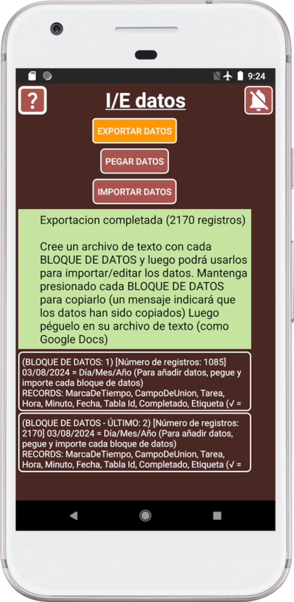
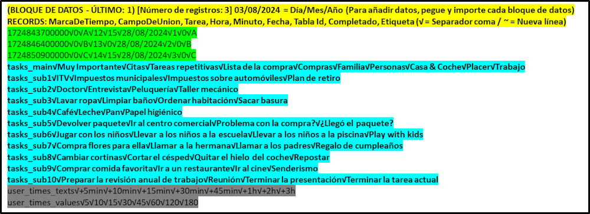
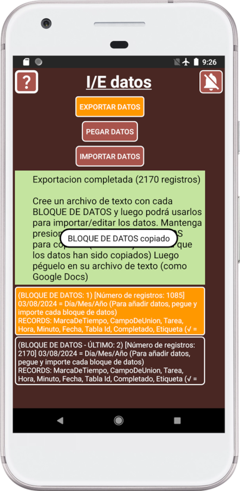
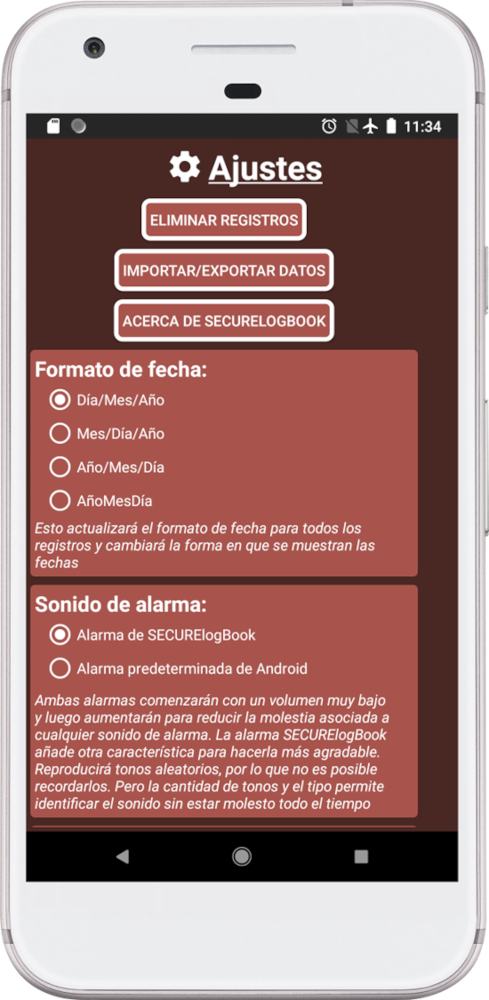
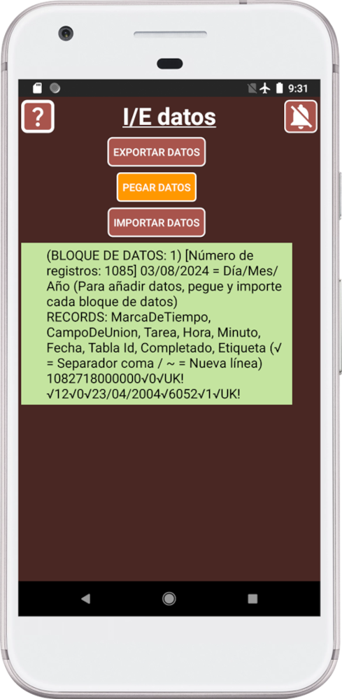
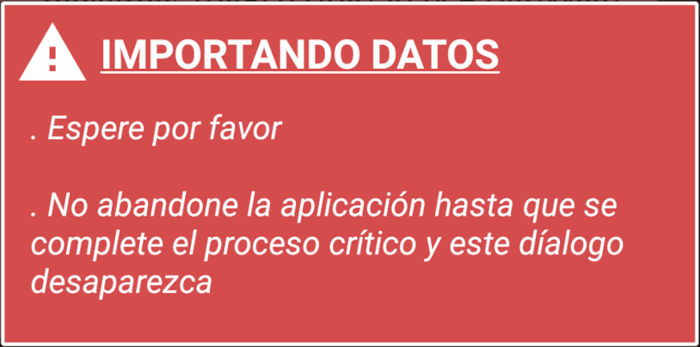
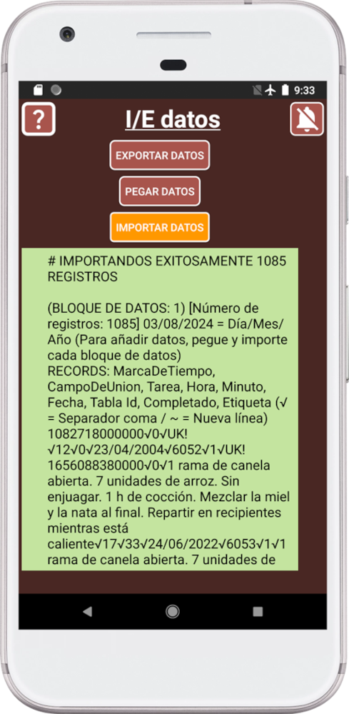

SECURElogBook proporciona una forma única y segura de importar y exportar información sin necesidad de permiso para acceder a su dispositivo. Además, funciona sin conexión a internet.
Básicamente, la ventana de Importar/Exportar puede transformar la información de SECURElogBook en texto (registros, datos del menú Favoritos y datos de tiempos de usuario). También puede leer la información para recrear registros, datos del menú Favoritos y datos de tiempos de usuario. Así, puede almacenar este texto para crear copias de seguridad de sus datos de SECURElogBook.
Esta función le permite compartir registros de entrenamiento, crear registros de ingesta de medicamentos para otros. También puede exportar, editar y volver a importar su información. Puede usar unidades USB o cualquier software de comunicación basado en internet para transferir sus datos de manera segura.
SECURElogBook puede almacenar hasta 18,446,744,073,709,551,616 registros. Con la capacidad de crear copias de seguridad, la capacidad de almacenamiento es prácticamente ilimitada.
Evitaré almacenar información en servicios en la nube ya que algunas empresas pueden tener acceso a su información. Si usa un servicio en la nube para almacenar información, asegúrese de que esté cifrada. 7Zip es un software gratuito para Windows que le permitirá cifrar sus archivos.
La mejor práctica para almacenar sus datos es tener su información cifrada en 3 unidades USB locales diferentes separadas por 27m.
Como siempre, mi deber es tratar de explicar todo, incluso cuando SECURElogBook es muy fácil de usar ya que todo sigue la lógica. Pero cuanto más sepa, más podrá hacer 😉
Cosas que necesita saber sobre el sistema de Importar/Exportar:
1. Una vez que salga de la ventana, la información se elimina del portapapeles para evitar que otras aplicaciones accedan a sus datos.
2. El sistema resaltará lo último que hizo poniéndolo en naranja:

Aquí podemos ver que hemos presionado el botón EXPORTAR DATOS y ya hemos copiado el primer bloque de datos, ya que ambos están en naranja ahora.
3. Cuando presionamos el botón IMPORTAR, el programa revisará la información antes de usarla.
El fondo del cuadro de texto le informará si se detectó un problema o no:
. Fondo verde => Todo correcto.
. Fondo naranja => Uno o más registros tienen problemas y no se han añadido. Información adicional le ayudará a identificar el problema.
. Fondo rojo = ERROR. El programa encontró grandes problemas y no se transfirió ningún dato.
Si no cambió la información y experimenta un problema durante el proceso, verifique el programa que está utilizando para copiar y pegar la información.
Si el programa no puede copiar/pegar toda la información “romperá” los datos y creará problemas.
La forma más fácil de almacenar su información es crear documentos borrador en Gmail o Outlook, luego puede crear archivos de texto a partir de ellos usando una computadora.
4. El programa divide sus datos en pequeños bloques de datos para permitir copiar y pegar la información entre programas. Cuantos más registros tenga, más bloques de datos se crearán.
Cada bloque de datos le dice todo lo que necesita saber dentro de su encabezado. Después del encabezado encontraremos los datos.
Los datos son como un archivo CSV (Valores Separados por Comas) donde la coma se reemplaza por “√” y las líneas de ruptura se reemplazan por “~”. Los archivos CSV se pueden editar usando Excel para crear una tabla.
Estructura de archivos de SECURElogBook:
. Información del encabezado (primeras 2 líneas):
. PRIMERO, Información sobre los datos.
. SEGUNDO, encabezados de columnas de la tabla.
. Datos:
. Registros, información que comienza con un número largo.
. Datos del menú Favoritos, información que comienza con “tasks_”.
. Datos de tiempo de usuarios que comienzan con “users_time_”.

Por cierto, no necesita saber esta información. Será útil si desea editar su información y volver a ingresarla en la aplicación.
Una vez que exportamos la información, podemos almacenarla donde queramos ya que es solo texto.
Por razones técnicas, los datos se dividen en pequeños bloques de alrededor de 120kb.
5. Cada vez que mantenga presionado un bloque de datos, se resaltará en naranja para informarle dónde se encuentra en el proceso de copiar información.
6. Cuando exportamos información de SECURElogBook para crear una copia de seguridad, se indicará el número total de registros. Así que puede comparar ese valor con el valor mostrado en el último bloque de datos, el etiquetado con "LAST". Si ambos valores son iguales, significa que todo salió bien.
7. SECURElogBook no admite copias de seguridad automáticas ni migración a un nuevo dispositivo. Para transferir sus datos de SECURElogBook a otro dispositivo, debe usar la aplicación SECURElogBook. Esto significa que necesita exportar sus datos del dispositivo antiguo y luego importarlos al nuevo dispositivo. Este proceso asegura que sus datos permanezcan bajo su control.
8. Puede editar la información usando un editor de texto como NotePad o similar. Así que puede usar un editor de texto para hacer cambios en su información y luego agregarla nuevamente.
No agregue ni cambie estos símbolos:
√ = separador de comas.
~ = línea de ruptura.
SECURElogBook usa esos símbolos para codificar y decodificar la información.
9. SECURElogBook no permitirá tener dos o más registros con la misma fecha y hora, es decir, con la misma marca de tiempo.
10. Dos o más registros pueden tener la misma marca de tiempo (fecha y hora) solo después de importarlos sobre registros existentes. Será muy raro, pero puede suceder si:
. Importamos registros de otra persona y algunos comparten la misma fecha y hora.
. Porque importamos los mismos datos más de una vez.
Si esto sucede, SECURElogBook vinculará los registros cuando los edite/elimine.
Cuando elimine un registro, eliminará todos los registros con esa fecha y hora específicas. Si edita un registro que tiene otros registros con la misma fecha y hora, solo mantendrá el primer registro y eliminará todas las demás copias.
La forma más segura de lidiar con este problema es:
1. Exportar los registros afectados. Puede usar el sistema de búsqueda.
2. Editar su valor de marca de tiempo para hacerlos diferentes. Asegúrese de que los valores de marca de tiempo sean únicos.
3. Eliminar los registros con fallos dentro de SECURElogBook.
4. Importar los editados.
5. Cambiar la hora/fecha de los registros.
Esto rara vez sucederá, pero ahora sabe cómo solucionar el problema si le sucede. Obviamente, ya estoy trabajando en una función de importación segura para prevenir este problema.
Ahora sabe un poco más sobre cómo funciona SECURElogBook. No es complicado ya que usa lógica en todas partes, pero necesita conocer algunas reglas básicas.
EXPORTAR
Para proteger sus datos, la información copiada se eliminará si sale de la ventana de Importar/Exportar.
1. Presione
2. Presione el botón IMPORTAR/EXPORTAR DATOS.
3. Presione el botón EXPORTAR DATOS. Permita que el programa trabaje:

Una vez que el proceso se complete, verá todos los bloques que podemos almacenar externamente:
Cuantos más registros tenga, más bloques de datos se crearán. En este caso tenemos 2 bloques de datos.
Podemos ver que tenemos un total de 2170 registros.
Recuerde, el color naranja se usa para informarle lo que está haciendo. En este momento, podemos ver que presionamos el botón EXPORTAR DATOS ya que está en naranja.
4. Copie la información del primer bloque de datos manteniéndolo presionado.

El primer bloque de datos se volverá naranja, informándonos que sus datos han sido copiados.
5. Pegue los datos en cualquier editor de texto. Si no tiene un programa de editor de texto, use Gmail o Outlook para crear archivos borrador. Verá algo como esto:
. Información del encabezado.
. Información de registros.
. Datos del menú Favoritos.
. Datos de tiempo de usuarios.
La primera línea del encabezado contiene la información del bloque para informarle de dónde proviene esta información.
6. Guarde la información como un archivo de texto.
7. Copie la información del siguiente bloque de datos manteniéndolo presionado.
8. Repita el paso 5 hasta que no queden más bloques de datos por copiar.
9. Asegúrese de almacenar la información en un lugar seguro.
IMPORTAR
1. Presione
2. Presione el botón IMPORTAR/EXPORTAR DATOS.

3. Abra el primer archivo de respaldo que se verá así:
. Información del encabezado.
. Información de registros.
. Datos del menú Favoritos.
. Datos de tiempo de usuarios.
Todos los archivos deben tener un encabezado, con 2 líneas. Debajo del encabezado podemos encontrar datos de: registros, información del menú Favoritos y datos de tiempo de usuarios. La información del menú Favoritos y los datos de tiempo de usuarios normalmente están al final del último archivo.
Solo si el archivo de respaldo contiene información del menú Favoritos o datos de tiempo de usuarios, esa información se actualizará. Esta información está al final del último bloque de datos.
4. Copie toda la información dentro del archivo. No copiar toda la información del archivo puede crear problemas.
5. Presione el botón PEGAR DATOS:
6. Permita que se peguen los datos:
Una vez que el proceso se complete, veremos la información dentro del cuadro de texto:

Observe cómo el botón PEGAR DATOS ahora está en naranja, para indicar que hemos pegado la información. Además, el texto le permite leer el encabezado para saber qué información del archivo se pegó. Este pequeño detalle le permitirá saber qué está haciendo en todo momento. Así que es fácil ver que acabamos de pegar “BLOQUE DE DATOS: 1”.
7. Presione importar datos y permita que SECURElogBook complete el trabajo:

SECURElogBook verificará la información antes de agregarla a la aplicación.
Una vez que el proceso se complete, veremos la información dentro del cuadro de texto:

Observe cómo el botón IMPORTAR DATOS ahora está en naranja, para indicar que hemos importado la información. Además, el texto le permite leer el encabezado para saber qué información del archivo se importó. Este pequeño detalle le permitirá saber qué está haciendo en todo momento. Es fácil ver que acabamos de importar “BLOQUE DE DATOS: 1”.
El fondo del cuadro de texto le informará si se detectó un problema o no:
. Fondo verde => Todo correcto.
. Fondo naranja => Uno o más registros tienen problemas y no se han añadido. Información adicional le ayudará a identificar el problema.
. Fondo rojo = ERROR. El programa encontró grandes problemas y no se transfirió ningún dato.
8. Si hay más archivos, abra el siguiente archivo de respaldo y vaya al paso 4.
El encabezado del último archivo le indica el número total teórico de registros a importar (“Número de registros = ”). Si presiona el botón EXPORTAR DATOS, el cuadro de texto indicará cuántos registros tiene actualmente. Ambos valores deben coincidir. Si los valores no coinciden es porque tuvimos un problema con el proceso de copiar/pegar. Tal vez olvidó importar un archivo. Tal vez hay un problema con el software utilizado para crear los archivos o el programa de texto no puede copiar toda la información.